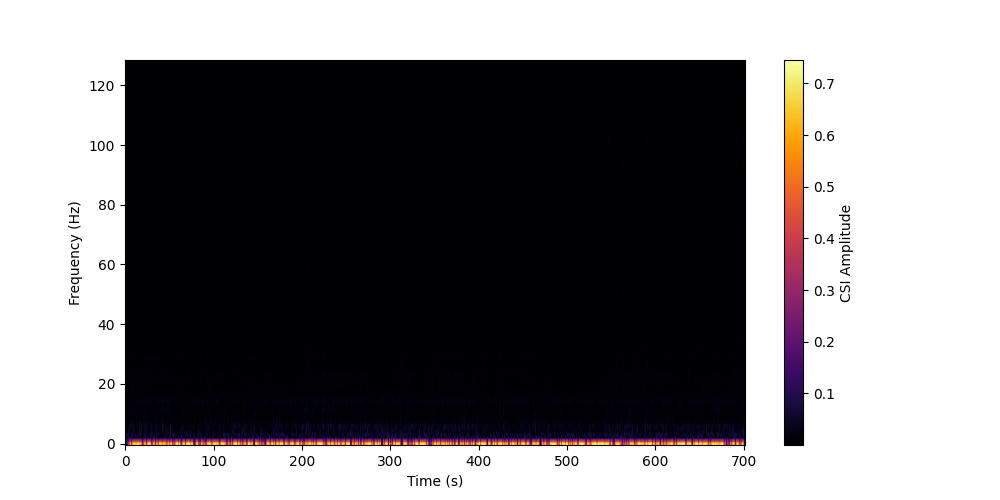
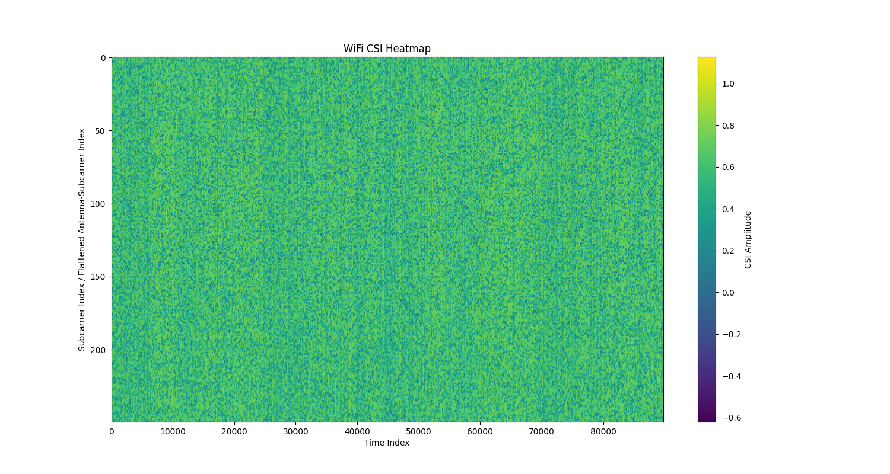

Note
Go to the end to download the full example code.
CSI Augmentation.adding_noise Tutorial¶
# !pip install pysensing
In this tutorial, we will be implementing a simple csi.augmentation.adding_noise tutorial using the pysensing library.
import sys
sys.path.append('../..')
import pysensing.csi.augmentation.adding_noise as adding_noise
import pysensing.csi.dataset.get_dataloader as load_data
import matplotlib.pyplot as plt
import numpy as np
from scipy import signal
Load the data¶
# Define the plot function
def plot_csi_heatmap(csi_data):
"""
Plot WiFi CSI heatmap.
"""
data_shape = csi_data.shape
if len(data_shape) == 2:
csi_to_plot = csi_data
elif len(data_shape) > 2:
csi_to_plot = csi_data.reshape(-1, data_shape[-1])
else:
raise ValueError("The input data should have at least 2 dimensions.")
plt.figure(figsize=(15, 8))
plt.imshow(csi_to_plot, aspect='auto', cmap='viridis')
plt.colorbar(label='CSI Amplitude')
plt.title('WiFi CSI Heatmap')
plt.xlabel('Time Index')
plt.ylabel('Subcarrier Index / Flattened Antenna-Subcarrier Index')
plt.show()
def plot_spec(csi):
_, _, csi_spectrogram = signal.stft(csi, window='hann', nperseg=256, noverlap=128)
specgram = np.abs(csi_spectrogram)
plt.figure(figsize=(10,5))
plt.imshow(specgram.squeeze(), aspect='auto', origin='lower', cmap='inferno')
plt.colorbar(label='CSI Amplitude')
plt.xlabel('Time (s)')
plt.ylabel('Frequency (Hz)')
Load the data
_, test_loader = load_data.load_classification_dataset('UT_HAR',batch_size=1)
example_csi_data_list = []
for data in test_loader:
data, label = data
example_csi_data_list.append(data)
example_csi_data = np.concatenate(example_csi_data_list, axis=-1)
plot_csi_heatmap(example_csi_data)
/data1/msc/zyj/yunjiao_csi/1028/yunjiao_csi/tutorials/csi_source/data/csi
using dataset: UT-HAR DATA
1. dropout¶
Use dropout augmentation
csi_process = adding_noise.dropout(dropout_prob=0.2)
plot_spec(example_csi_data.squeeze()[2])
reduced_csi_data = csi_process(example_csi_data)
plot_spec(reduced_csi_data.squeeze()[2])
plot_csi_heatmap(reduced_csi_data)
- 
- 
2. guassian noise¶
add gaussian noise
csi_process = adding_noise.add_noise(noise_std=0.02)
reduced_csi_data = csi_process(example_csi_data)
plot_csi_heatmap(reduced_csi_data)
And that’s it. We’re done with our CSI augmentation.adding_noise tutorials. Thanks for reading.
Total running time of the script: (0 minutes 19.268 seconds)